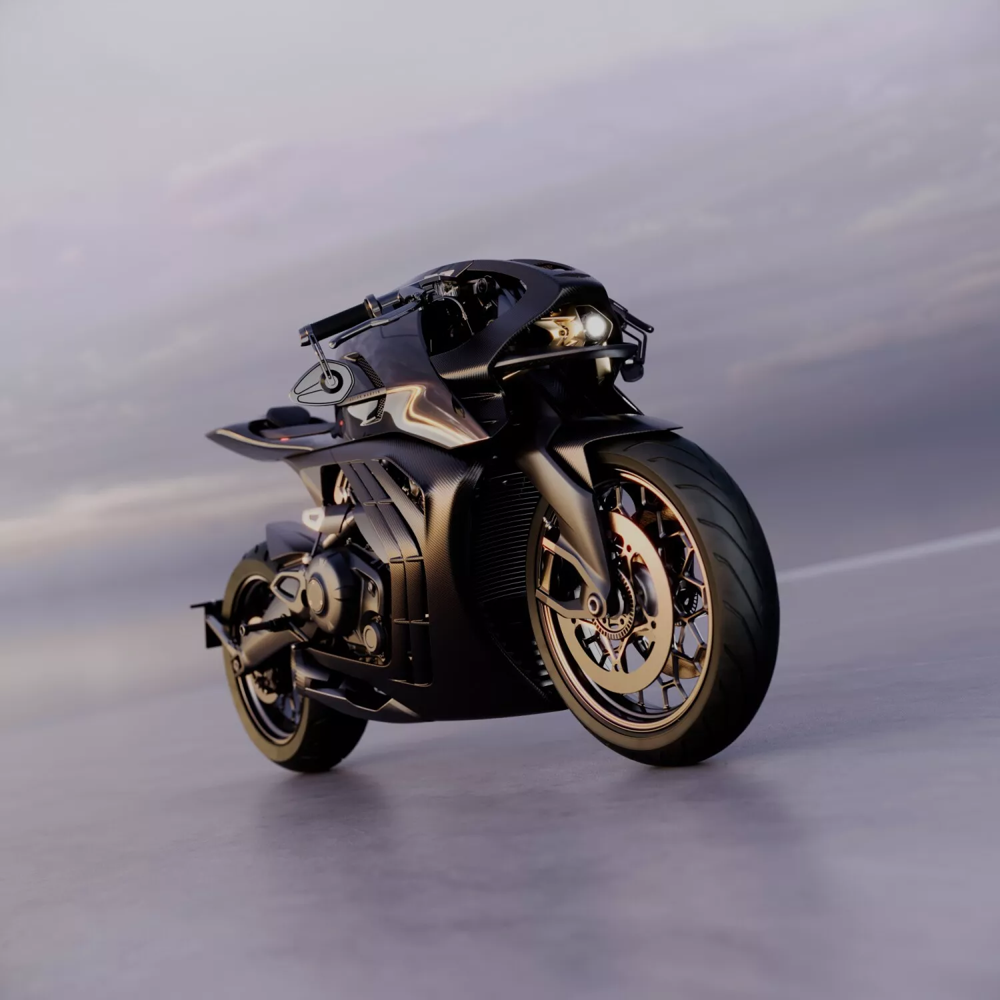
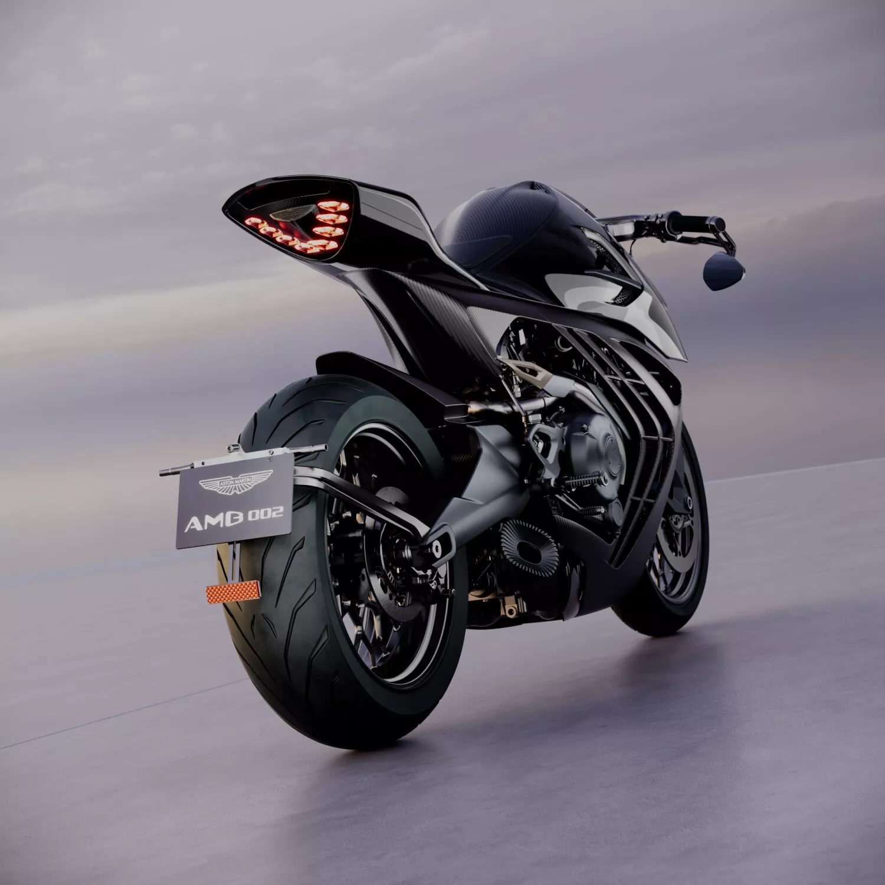
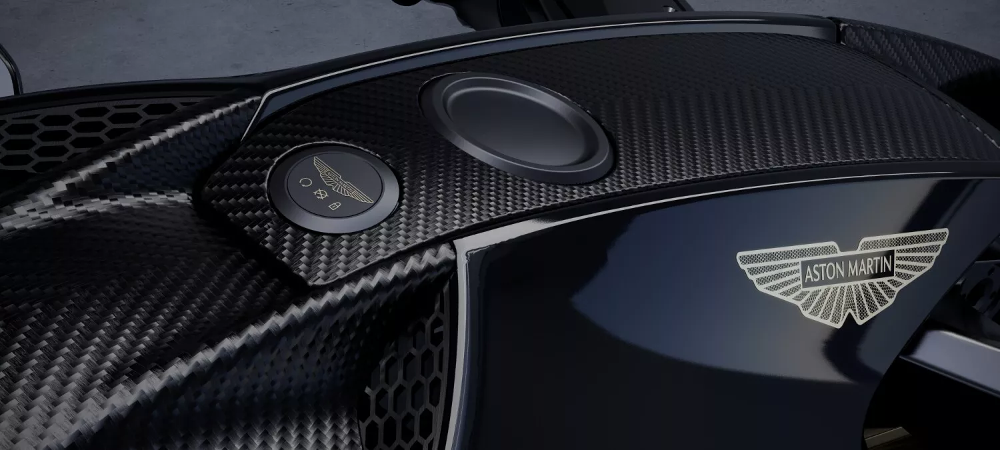
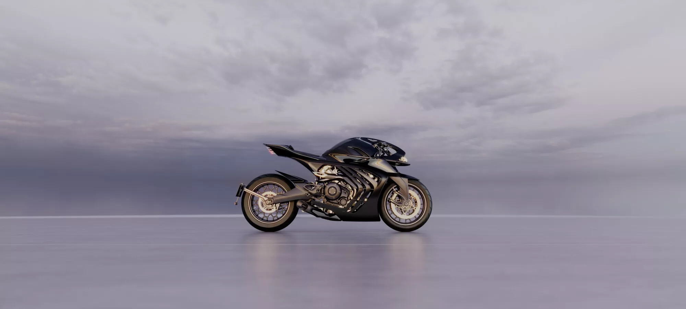
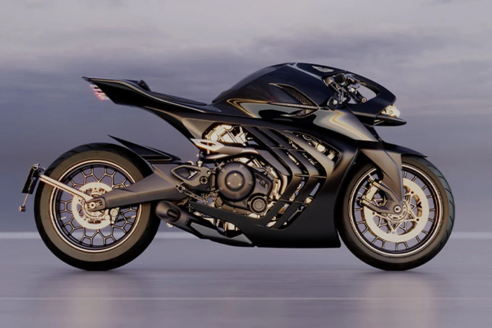
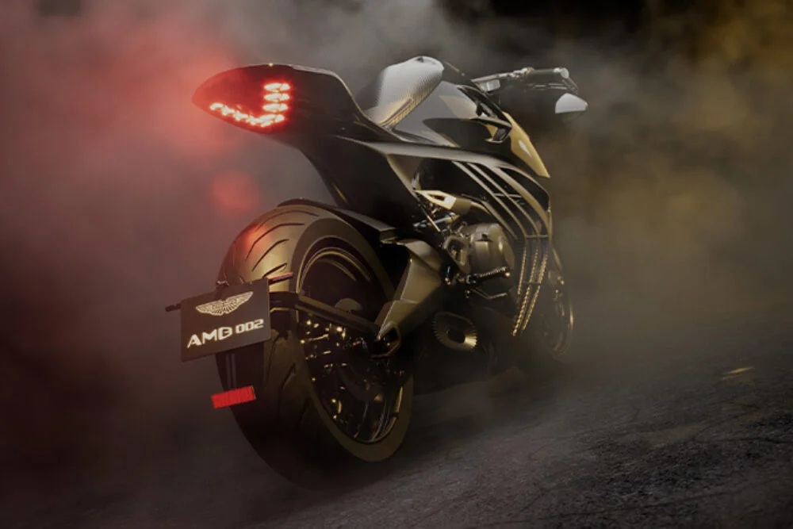

▲ 애스턴마틴과 브로 슈페리어가 함께 만든 AMB 002 로드스터. 카본 파이버 차체에 골드 톤 휠과 브레이크 디스크가 대비를 이룬다
1. 190kg·130마력, 그런데 바퀴가 두 개다
"190kg에 130마력" — 이 숫자만 보면 소형 스포츠카나 경량 슈퍼카를 떠올리기 쉽지만, 정체는 오토바이다. 애스턴마틴과 영국 오토바이 명가 브로 슈페리어(Brough Superior)가 공동 개발한 도로 주행용 모터사이클 'AMB 002 로드스터'가 그 주인공이다. 국내 매체 오토트리뷴은 이 소식을 전하며 "애스턴마틴이 300대만 만드는 도로용 작품"이라고 소개했다.
AMB 002 로드스터는 두 브랜드가 2019년 트랙 전용 슈퍼바이크 AMB 001을, 2022년에는 그 후속 AMB 001 프로를 각각 선보인 데 이어 내놓은 세 번째 협업작이자, 처음으로 일반 도로 주행이 가능한 모델이다. 애스턴마틴 공식 발표에 따르면 이 오토바이는 "애스턴마틴의 전설적인 디자인 언어와 브로 슈페리어의 최첨단 엔지니어링을 결합"한 결과물로, 애스턴마틴의 날개 엠블럼이 도로용 오토바이에 처음 새겨진 사례이기도 하다. 공식 발표는 아래에서 확인할 수 있다. 바로가기

▲ 후측면에서 본 AMB 002 로드스터. 애스턴마틴 날개 로고가 새겨진 번호판 홀더와 블레이드 형태의 테일램프가 눈에 띈다 ⓒ Aston Martin Media
2. '오토바이계의 애스턴마틴', 브로 슈페리어는 어떤 브랜드인가
브로 슈페리어는 1919년 영국에서 설립된 럭셔리 오토바이 브랜드로, 흔히 "자동차의 애스턴마틴이 곧 오토바이의 브로 슈페리어"라는 말로 소개된다. 창업 초기부터 정교한 설계와 고급 마감으로 명성을 쌓았고, 작가이자 군인인 T.E. 로렌스(아라비아의 로렌스)가 애용한 브랜드로도 잘 알려져 있다. 한동안 명맥이 끊겼다가 2013년 프랑스 툴루즈를 기반으로 재건된 이후, 소량 생산·고가 정책을 유지하며 다시 럭셔리 오토바이 시장의 상징으로 자리잡았다.
애스턴마틴과 브로 슈페리어의 만남은 두 '영국 프리미엄 브랜드'가 자동차와 오토바이라는 각자의 영역에서 쌓아온 브랜드 헤리티지를 하나로 묶었다는 점에서 의미가 크다. AMB(Aston Martin & Brough Superior) 시리즈라는 이름 자체가 두 브랜드의 협업임을 그대로 드러낸다. 애스턴마틴 공식 파트너십 페이지에 따르면 두 회사는 "오토바이 설계와 엔지니어링 분야에서 장기적으로 협력"하고 있으며, 브로 슈페리어의 모든 오토바이는 "최고급 소재와 부품만을 사용해 수작업으로 제작"된다고 소개하고 있다.
고성능 브랜드가 오토바이 한정판을 내놓는 흐름은 애스턴마틴·브로 슈페리어만의 이야기가 아니다. BMW 모토라드는 BMW 그룹의 고성능 서브 브랜드 M과 손잡고 한정판 모델을 선보여온 바 있고, 두카티 역시 매년 소수의 스페셜 에디션을 공개하며 희소성을 마케팅 포인트로 삼는다. 다만 AMB 002는 자동차 브랜드가 오토바이 명가와 함께 처음부터 설계 단계를 공유했다는 점에서, 로고만 붙이는 통상적인 브랜드 협업 한정판과는 결이 다르다는 평가를 받는다.
3. 카본과 티타늄, 하이퍼카에서 빌려온 디자인 언어
AMB 002 로드스터의 차체는 카본 파이버로 마감됐으며, 연료 탱크 역시 카본 소재로 제작됐다. 측면 실루엣에는 애스턴마틴 자동차 라인업에서 반복적으로 쓰이는 상징적 사이드 디자인 요소가 재해석돼 들어갔고, 타원형 배기구에는 열을 효과적으로 배출하기 위한 전용 방열 디테일이 적용됐다.
후면부 블레이드 형태의 테일램프는 애스턴마틴의 하이퍼카 발키리(Valkyrie)와 벌칸(Vulcan)에서 영감을 받았다는 것이 브랜드 측 설명이다. 시트는 수작업으로 마감한 새들 가죽을 사용해 손으로 만든 고급스러움을 강조했다. 연료 주입구 주변에는 애스턴마틴 날개 엠블럼과 카본 파이버 패널이 그대로 드러나 있어, 자동차 브랜드의 디테일이 오토바이에 옮겨온 흔적을 곳곳에서 확인할 수 있다.

▲ 연료 주입구 옆에 새겨진 애스턴마틴 날개 엠블럼. 카본 파이버 패널과 잠금 버튼이 함께 노출돼 있다 ⓒ Aston Martin Media
📍 참고로 알아두면 좋은 것
AMB 002라는 이름의 '002'는 트랙 전용이었던 1세대 AMB 001·AMB 001 프로에 이어 두 번째로 나온 협업 모델이라는 뜻이다. 다만 AMB 001 시리즈와 달리 AMB 002는 애스턴마틴·브로 슈페리어 협업 최초로 일반 도로에서 번호판을 달고 달릴 수 있다.
4. 숫자로 보는 성능… 190kg에 130마력의 의미
AMB 002 로드스터의 심장은 새로 개발된 1,083cc 4행정 수랭식 V트윈 엔진이다. 이 엔진은 브로 슈페리어의 프랑스 툴루즈 본사에서 설계·가공·조립까지 모두 이뤄지며, 무게 절감과 구조적 효율성을 고려해 빌릿 가공된 엔진 케이스를 사용한다. 최고출력은 130마력, 최대토크는 110Nm(약 81.2lb-ft)에 달한다.
| 항목 | 사양 |
|---|---|
| 엔진 | 1,083cc 4행정 수랭식 V트윈 |
| 최고출력 | 130마력 |
| 최대토크 | 110Nm(약 81.2lb-ft) |
| 공차중량 | 약 190kg |
| 프레임 | 빌릿 티타늄 백본 프레임(약 5kg) |
| 무게 배분 | 전후 50:50 |
| 프런트 서스펜션 | 피오르 포크(Fior fork), 안티다이브 특성 |
엔진을 감싸는 프레임은 티타늄 빌릿을 깎아 만든 백본 구조로 무게가 약 5kg에 불과하며, 이를 통해 전후 50:50의 이상적인 무게 배분을 구현했다고 브랜드 측은 설명한다. 프런트 서스펜션에는 조향력과 제동력을 분리해 제어하는 '피오르 포크(Fior fork)' 방식이 적용됐다. 이는 앞서 나온 AMB 001 프로의 서스펜션 기술을 한 단계 발전시킨 것으로, 제동 시 차체가 앞으로 쏠리는 것을 억제하는 안티다이브 특성을 통해 급제동 상황에서도 안정적인 컨트롤을 제공한다는 설명이다.

▲ 측면에서 본 AMB 002 로드스터의 전체 실루엣. 노출된 V트윈 엔진과 골드 톤 휠, 낮은 차체가 특징이다 ⓒ Aston Martin Media

▲ 프레임 사이로 그대로 드러난 1,083cc 수랭식 V트윈 엔진. 빌릿 가공된 케이스와 배관이 그대로 노출돼 기계적 디테일을 강조한다 ⓒ Aston Martin / Brough Superior
5. 전 세계 300대, 그리고 아직 베일에 싸인 가격
AMB 002 로드스터는 전 세계 단 300대만 생산되는 한정판이다. 사전 주문이 이미 시작됐으며, 첫 고객 인도는 2027년 3분기부터 순차적으로 진행될 예정이다. 정식 판매 가격은 애스턴마틴과 브로 슈페리어 양측 모두 공식 보도자료에서 밝히지 않았지만, 해외 오토바이 전문 매체들은 대략 12만 유로(약 1억 9천만원) 안팎으로 책정될 것이라는 전망을 내놓고 있다. 앞서 트랙 전용으로 나온 1세대 AMB 001이 10만 8천 유로 선에 판매됐던 것을 감안하면, 도로 주행이 가능해진 AMB 002 역시 비슷하거나 다소 높은 수준에서 가격이 결정될 가능성이 크다. 정확한 가격은 향후 공식 발표를 통해 확정될 전망이다.
✅ 애스턴마틴 AMB 002 로드스터, 이것만은 확인하세요
· 애스턴마틴×브로 슈페리어 협업 첫 도로 주행용 모터사이클, 전 세계 300대 한정
· 1,083cc V트윈 엔진, 130마력·110Nm, 공차중량 약 190kg
· 티타늄 백본 프레임(5kg)으로 전후 50:50 무게 배분 구현
· 공식 판매가 미발표, 해외 추정가 1억원대 후반~3억원대
· 2027년 3분기부터 순차 고객 인도 예정
300대라는 생산 대수는 단순한 마케팅 숫자가 아니다. 트랙 전용이던 AMB 001·AMB 001 프로가 수억원대에 극소수만 팔렸던 것과 비교하면, 도로 주행이 가능한 AMB 002는 상대적으로 접근성을 넓히면서도 여전히 '누구나 살 수 없는' 희소성을 유지하는 절묘한 지점에 자리잡고 있다.

▲ 붉은 조명과 안개 효과로 연출된 AMB 002 로드스터의 후측면. 골드 톤 프레임과 테일램프의 강렬한 인상이 두드러진다 ⓒ Aston Martin / Brough Superior
6. 애스턴마틴에게 오토바이란 무엇인가
애스턴마틴이 자동차가 아닌 영역에 브랜드를 빌려주는 것은 이번이 처음이 아니다. 앞서 자전거, 잠수정, 요트 콘셉트 등 다양한 '라이프스타일' 제품에 애스턴마틴의 디자인 언어를 적용해온 바 있다. 부가티가 자전거를, 페라리가 의류·가전 브랜드를 내놓는 것처럼, 슈퍼카 제조사들이 본업인 자동차를 넘어 브랜드 자체를 하나의 럭셔리 라이프스타일로 확장하는 흐름과 맞닿아 있다.
다만 AMB 002는 단순한 브랜드 라이선싱을 넘어, 브로 슈페리어라는 오토바이 명가와의 공동 개발이라는 점에서 결이 다르다. 애스턴마틴의 디자인 헤리티지와 브로 슈페리어의 오토바이 엔지니어링 노하우가 실제 제품 개발 단계에서부터 결합된 사례이기 때문이다. 자동차 업계가 전동화·자율주행 경쟁으로 재편되는 가운데, 애스턴마틴 같은 헤리티지 브랜드들은 이처럼 희소성과 수공예적 가치를 앞세운 한정판 프로젝트로 브랜드의 프리미엄 이미지를 지켜나가고 있다.
정리
190kg의 무게에 130마력을 내는 애스턴마틴 AMB 002 로드스터는 자동차가 아닌 오토바이다. 애스턴마틴과 영국 오토바이 명가 브로 슈페리어가 함께 만든 이 모델은 두 브랜드 협업 최초의 도로 주행용 모터사이클로, 1,083cc V트윈 엔진과 티타늄 백본 프레임, 카본 파이버 차체를 갖췄다. 전 세계 300대 한정 생산되며 2027년 3분기부터 순차 인도될 예정이다. 정확한 판매 가격은 아직 공개되지 않았지만, 희소성과 수공예적 완성도를 앞세운 이 프로젝트는 애스턴마틴이 자동차를 넘어 브랜드 전체를 프리미엄 라이프스타일로 확장하는 전략의 연장선에 있다.